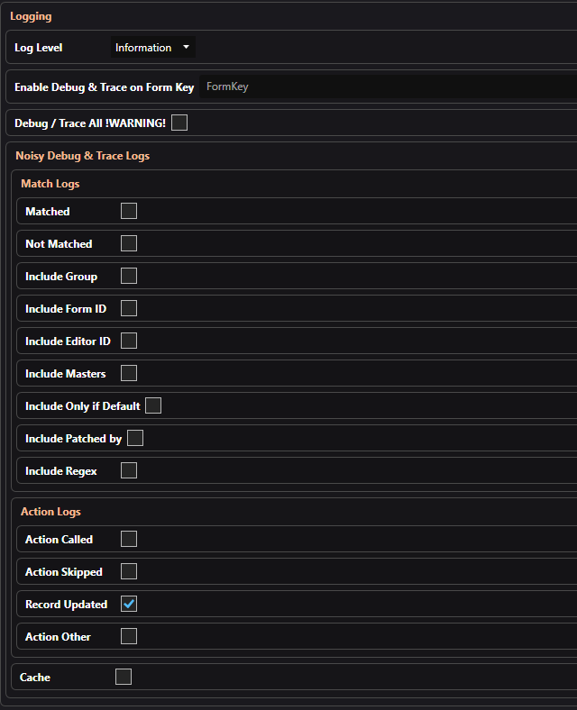

Synthesis GSP Settings
Generic Synthesis Patcher has a few settings that are set inside Synthesis.
NOTE: You can have a patcher in your Synthesis list twice using different settings if required.
Load GSP Configs:
When enabled will load the GSP JSON configuration files from the GSP Folder listed below. Enabled by default but can disable if you only want this instance of patcher to read alternative config files.
GSP Folder:
This is where the GSP JSON config files should be located. By default this is set to "{SkyrimData}\GSP", so you can add GSP JSON config files like normal mods in your mod manager.
If you have multiple Synthesis groups that contain GSP, you should make sure each copy of GSP points to a different folder. In this case you could set it to "{SynthesisData}" and store the JSON config files in the standard Synthesis data folder.
If you have multiple Synthesis groups that contain GSP, you should make sure each copy of GSP points to a different folder. In this case you could set it to "{SynthesisData}" and store the JSON config files in the standard Synthesis data folder.
Load KID Configs:
When enabled will load Keyword Item Distributor (KID) INI files from your Skyrim's data folder. Disabled by default.
KID Comments:
When enabled and using above KID configs, GSP will comment out any KID INI line that was successfully loaded in to GSP. This will mean KID will not try and also apply the same changes unnecessarily.
Any KID line that contains KID features currently not supported by GSP, will be left alone so KID can still apply them. GSP will still process lines commented out by GSP in future runs automatically, and even uncomment lines it maybe no longer supports. Currently Traits and Chance are unsupported.
Lines will be commented out with "; Handled by GSP - " being added to the start of the line. If you manually change this to anything else GSP will not recognize it as a valid GSP comment and ignore it. You can safely update / reinstall KID INI files, GSP reads lines with that specific prefix just the same as any non-commented line.
Any KID line that contains KID features currently not supported by GSP, will be left alone so KID can still apply them. GSP will still process lines commented out by GSP in future runs automatically, and even uncomment lines it maybe no longer supports. Currently Traits and Chance are unsupported.
Lines will be commented out with "; Handled by GSP - " being added to the start of the line. If you manually change this to anything else GSP will not recognize it as a valid GSP comment and ignore it. You can safely update / reinstall KID INI files, GSP reads lines with that specific prefix just the same as any non-commented line.
Dynamic Mods:
You should add all other mods that exist prior to this patcher in the load order here, that are also dynamically generated patches. This includes any of the following the may exist lower in the load order:
No need to add mods that exist after this mod in the load order, as they are automatically ignored by Synthesis patches.
- Synthesis group's patches
- SynthEBD patch
- Bash patches
No need to add mods that exist after this mod in the load order, as they are automatically ignored by Synthesis patches.
Logging
Log Level:
Set what log level you want to output. Default is Info, but you can set to Debug or Trace for more detailed logs.
When set to either Debug or Trace, you must specify what logs at Debug / Trace levels. By default nothing does, so use one of these methods:
When set to either Debug or Trace, you must specify what logs at Debug / Trace levels. By default nothing does, so use one of these methods:
- Using Debug option against Rule(s) and/or Group(s)
- Entering a Form Key (012345:Skyrim.esm) in the Logging Global settings.
-
Select "Debug / Trace All" option in Global settings. However this can produce a ridiculously large amount of logs.
Do not use this option when wanting help or reporting bugs.
Noisy Debug & Trace Logs:
Can help further reduce the amount of logs generated by turning on/off specific log types. If in doubt leave all on.
However if you are trying to troubleshoot a specific issue like why a merge action produced a certain result, you could disable all the "Match" logs without much concern.
However if you are trying to troubleshoot a specific issue like why a merge action produced a certain result, you could disable all the "Match" logs without much concern.